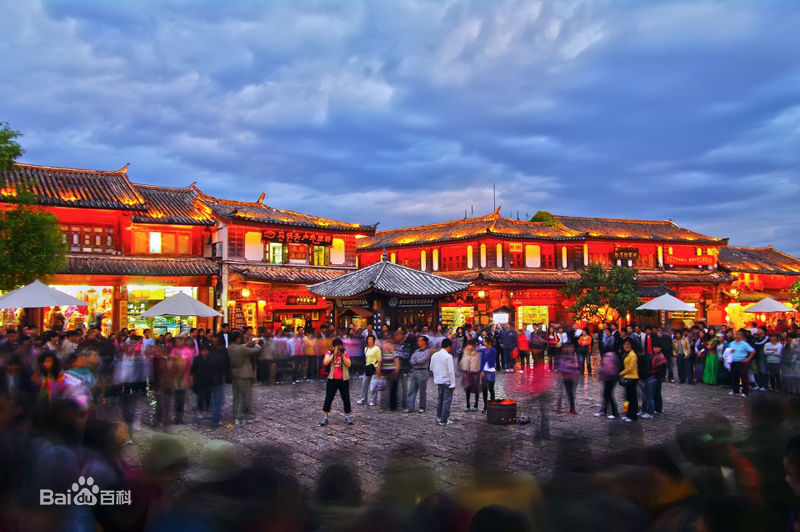
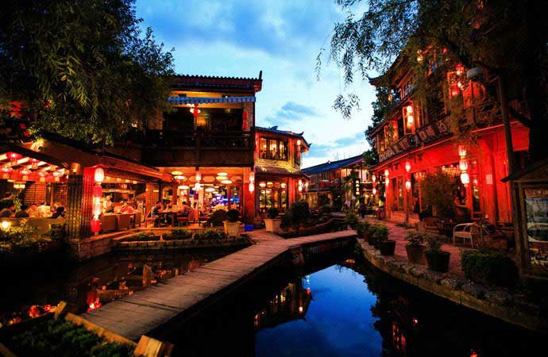
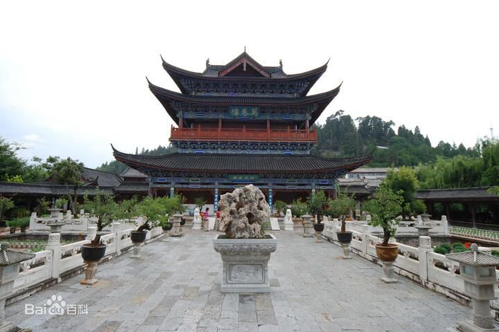

丽江古城
丽江古城始建于宋末元初（13世纪后期），由丽江木氏先祖将统治中心由白沙古镇迁至现狮子山，开始营造房屋城池，称“大叶场”。古城名称来源据说是因为丽江世袭统治者姓木，筑城势必如木字加框而成“困”字之故。丽江古城的纳西名称叫“巩本知”，“巩本”为仓廪，“知”即集市，丽江古城曾是仓廪集散之地。清雍正二年（1724年），第一任丽江流官知府杨馝到任后，在古城东北面的金虹山下新建流官知府衙门、兵营、教授署、训导署等，并环绕这些官府建筑群修筑城墙。
木府
原为丽江世袭土司木氏的衙署，位于古城狮子山东麓，始建于元代（公元1271～1368年），1998年重建后改为古城博物院。木府占地46亩，府内有大小房间共162间，中轴线长369米，三清殿、玉音楼、光碧楼、护法殿、万卷楼、议事厅、忠义坊由西向东排列井然。其内悬挂有历代皇帝钦赐的匾额十一块，反映了木氏家族的盛衰历史。讲述丽江木氏土司风云故事的电视剧《木府风云》就是在这里拍摄的。
古桥
在丽江古城内的玉河水系上，修建有桥梁354座，其密度为平均每平方公里93座。桥梁的形制多种多样，较著名的有锁翠桥、大石桥、万千桥、南门桥、马鞍桥、仁寿桥，均建于明清时期（公元14-19世纪）。其中以位于四方街以东100米的大石桥最具特色。大石桥为古城众桥之首，位于四方街东向100米，由明代木氏土司所建，因从桥下中河水可看到玉龙雪山倒影，又名映雪桥。该桥系双孔石拱桥，拱圈用板岩石支砌 桥长10余米，桥宽近4米，桥面用传统的五花石铺砌，坡度平缓，便于两岸往来。



旅行，是我们出门的目标